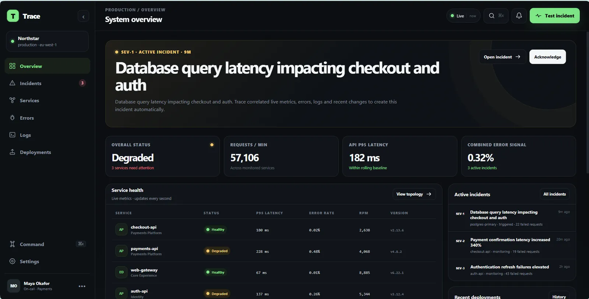
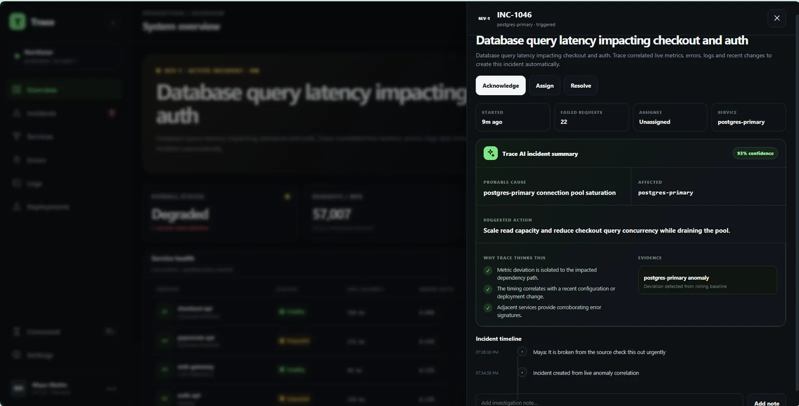
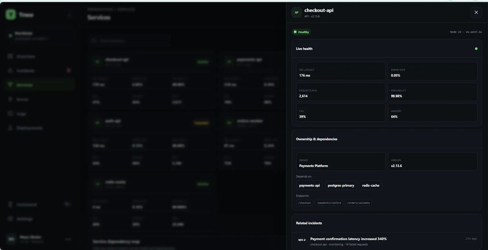
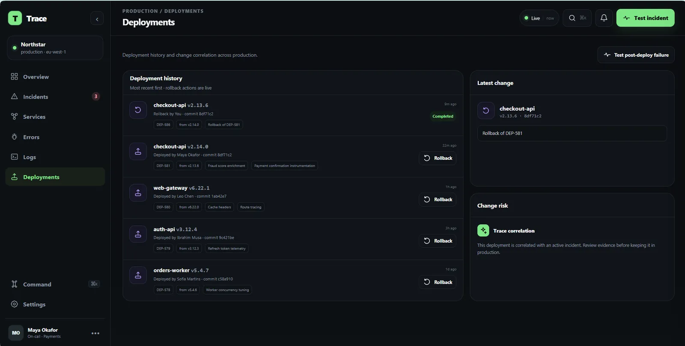
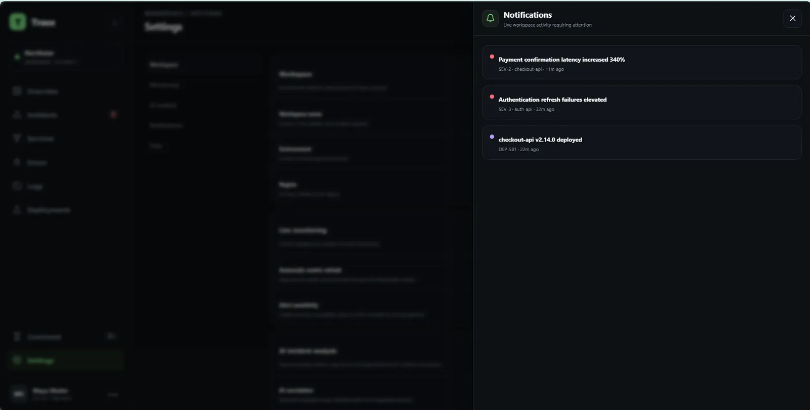

SEE THE SYSTEM
Service health, logs and deployment context are gathered into one incident surface.


Operational incidents become slower to resolve when metrics, logs, changes and response actions live in disconnected tools.
Trace turns them into one incident narrative so the on-call engineer can move from symptom to probable cause and mitigation.
The case study is organized around causal evidence: what changed, what broke, what the logs say and what action closes the loop.



This section reads the supplied artifacts as product evidence: what the interface has to keep understandable, connected or constrained.
Service health, logs and deployment context are gathered into one incident surface.
Incident state is treated as a timeline instead of a disconnected list of error messages.
Operational evidence and recent deployments can be read together when investigating what changed.
Probable-cause guidance sits inside the console without hiding the underlying evidence.
A compact contact sheet keeps the page readable; select any frame to inspect it at full size.